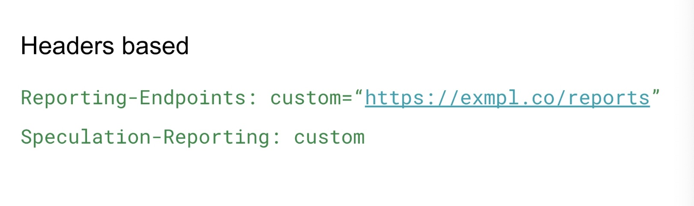
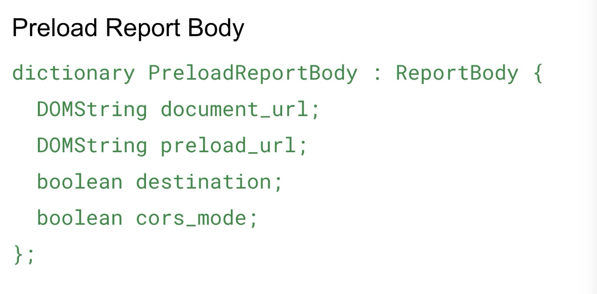
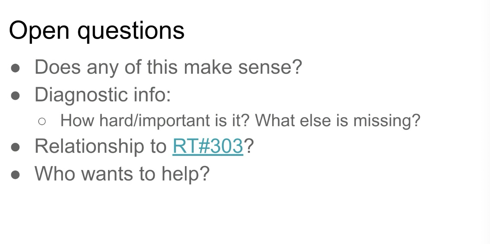
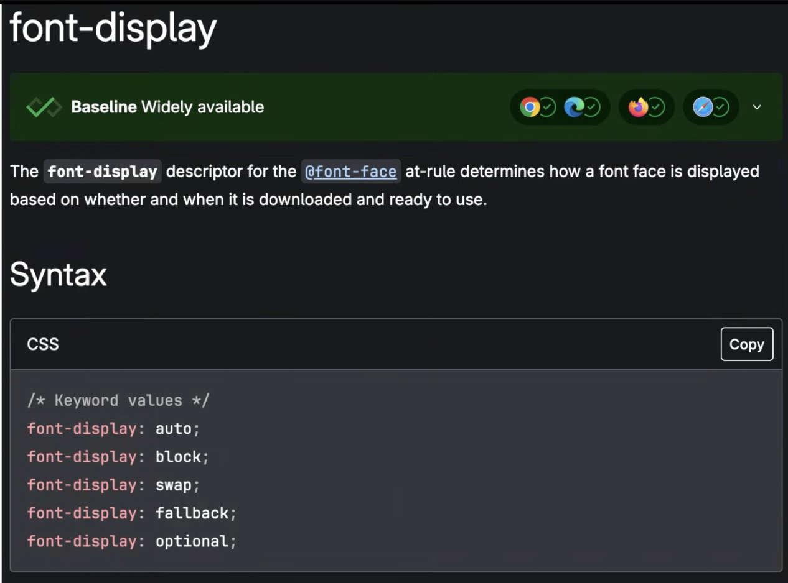
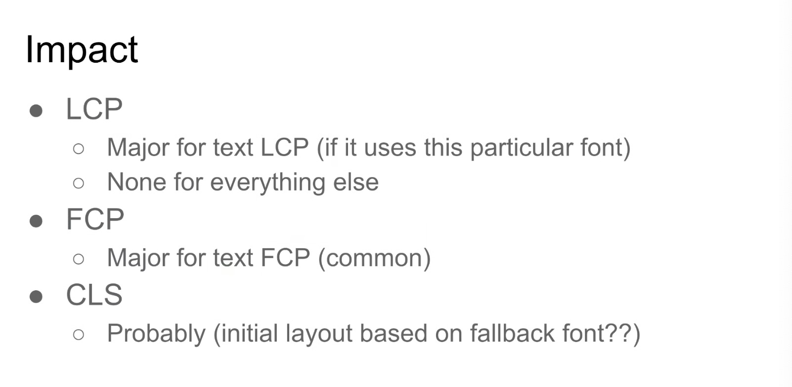
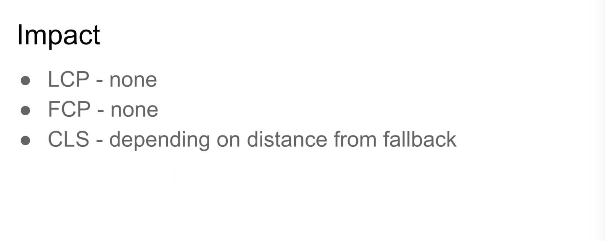
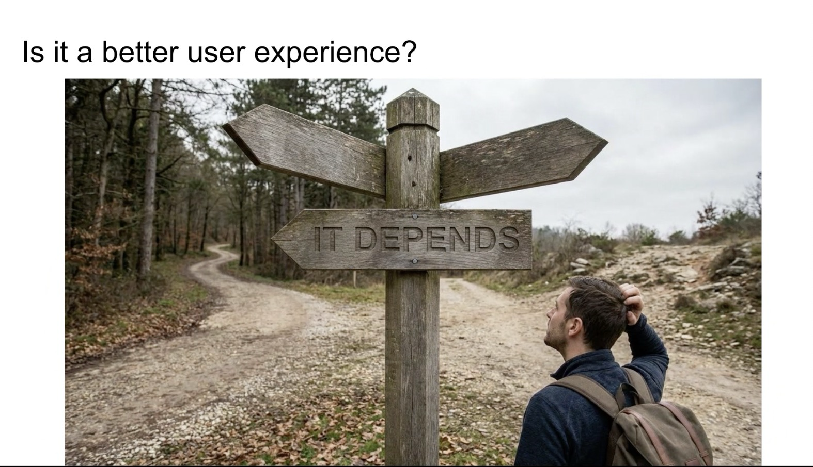
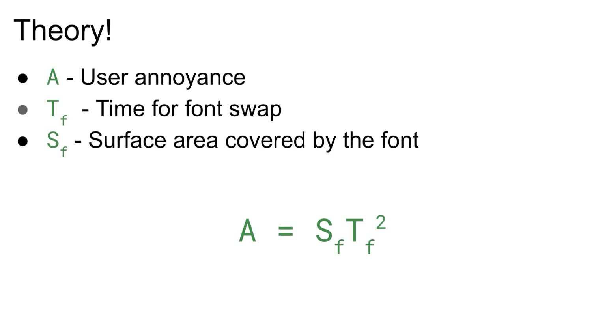
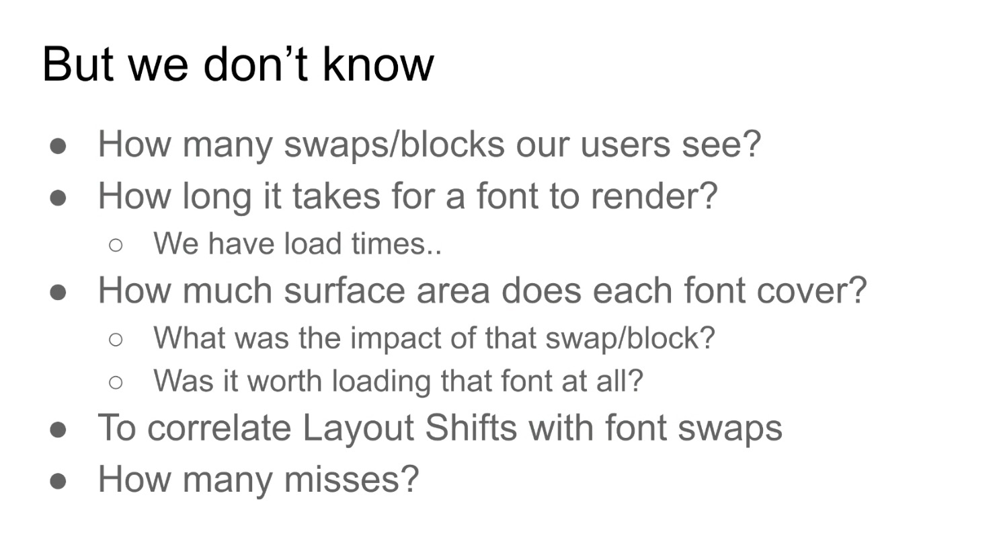
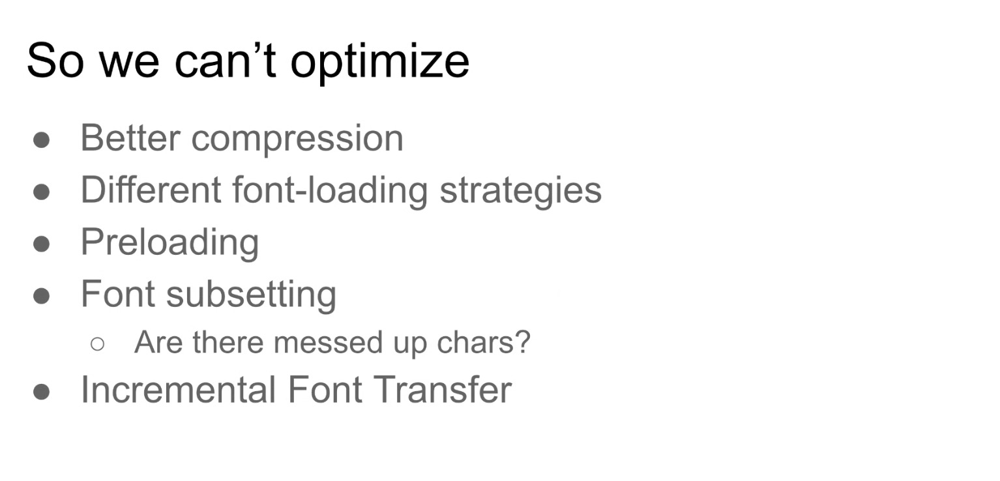

Participants
- Yoav Weiss, Nic Jansma, Giacomo Zecchini, Guohui Deng, Noam Helfman, Sigrid Huemer, Adrian de la Rosa, Michal Mocny, Joone Hur, Andy Luhrs, Robert Liu, Mike Jackson, Dave Hunt, Barry Pollard, Carine Bournez
Admin
- SKIP January 1st
- January 15th at 1pm EST / 10am PST
Minutes
Navigation confidence discussion
- Yoav: Recently landed the spec work for this feature in NavigationTiming.
- … Question that there is only 1 implementation commitment for this feature, but only 1
- … Charter currently requires 2+ implementation commitments
- … Is there enough support for this feature to stay as part of NavigationTiming
- … Thought the sentiment from TPAC discussions was there was enough interest
- … We don't have a clear / official way to get that sentiment
- … Talking to Bas on the Mozilla position, showed some disagreement on the feature
- … Move this to the next call on Jan 15th
- Michal: Without thinking of specific feature and what the status should be, what is the right process?
- … Would every proposed spec change without committers would be a WICG monkey patch, README, etc?
- Yoav: This is not something we've given a ton of thought into, that we should
- … Current language in charter comes from the current template rather than discussions what we should or shouldn't do
- … Other groups are working towards working modes that indicate in those cases how do we get signals from different implementors
- … For specs without signals, should they live in a separate document, or get integrated in with a note about lack of consensus
- … Something we need to think about and agree on
- … Hoping that'd happen for our next charter discussions that are up in a few months
- … Agreed a situation where every new proposal would have to live in a separate doc w/ monkey patching is not ideal
- … WHATWG has things living in PRs, which is not ideal
- … Spec moves under you, have to keep editing them to keep them live
- Noam: What is the definition for implementor, or intent?
- Yoav: None of that is defined at the moment
- Nic: Do two Chromium implementations count for two, etc.
- Yoav: We don't have the right folks in the room to make progress here, so we can move on to another subject
- … Bring back in January
- Yoav: AI image of a future where things are fast but there's a lot of waste involved in the process
- height: 934.00px; margin-left: 0.00px; margin-top: 0.00px; transform: rotate(0.00rad) translateZ(0px); -webkit-transform: rotate(0.00rad) translateZ(0px);" title="">
- … This is how I think of preload in many cases
- … Useful feature, enables us to accelerate things, but at the same time there's a lot of waste involved
- … We don't necessarily know when things go unused
- … Easy to find waste, last site visited, there were 45 unused preloads
- … Shopify isn't aware of that, merchant wasn't aware of that, only notification we get is in the Dev Console
- … Errors are heuristic (in Dev Console) – timeout in which a preload isn't used (after onload fired)
- … On top of Preload we now also have Speculation Rules, prefetches and pretenders that may or may not be useful
- … Not trivial for developers to know that they weren't being used
- … Ways on server side to know prefetch wasn't materialized, but generally hard
- … If we had a reporting mechanism for preloads, do something for prefetches/prerenders that go unused
- … Talked about integrating unused preloads as part of RT timeline, never reached any conclusion
- … [editor's note: https://github.com/w3c/resource-timing/issues/303]
- … I think we should send reports, using Reporting API, in order to send reports after the page was dismissed
- … Headers based approach

height: 482.00px; margin-left: 0.00px; margin-top: 0.00px; transform: rotate(0.00rad) translateZ(0px); -webkit-transform: rotate(0.00rad) translateZ(0px);" title="">- … Speculation reporting, speculative loads that were wasted, defined here
- … For preloads, we need the document URL, preload URL, destination and CORS mode mismatch

height: 792.00px; margin-left: 0.00px; margin-top: 0.00px; transform: rotate(0.00rad) translateZ(0px); -webkit-transform: rotate(0.00rad) translateZ(0px);" title="">
height: 788.00px; margin-left: 0.00px; margin-top: 0.00px; transform: rotate(0.00rad) translateZ(0px); -webkit-transform: rotate(0.00rad) translateZ(0px);" title="">- … Hear if others are interested in pushing forward
- Barry: Agree with Preload, less about Prefetch
- … May be loading two pages and taking hits thinking one will be used
- … Risk of noise there, prefetching/prerendering multiple pages and accepting that not all will be used anyway
- Yoav: For SPAs using preload to emulate prefetch, preloading more things that I need to in order for one to hit
- … Maybe define more values in header to limit what types of requests
- Barry: Looked at trying to remove Preload warnings, finding annoying
- … Next.js uses preload
- … Might get noisier
- Yoav: Advantage of Reporting API is opt-in
- Nic: like this. Can we talk about relationship to RT#303
- … benefits of having this data in RT - keeps the data together with other beacon data
- … Serialize the RT tree for reporting purposes. Knowing if a resource was consumed or not can be useful there
- … See value in both, but reporting is out-of-band and somewhat decoupled from other resources
- … RT#303 proposes to report the time in which a preload was consumed
- Yoav: Agreed there's value in both
- … Downside of RT#303 is that depending on when you're reading that RT data, and report at EOL of document is finalized
- … Isn't necessarily a downside to also reporting consumption timestamp as part of RT
- … Will have to more clearly mark preloads as such if we do that
- … Think through this from both angles
- … Values for preloads, prefetches/renders can be useful for sites that are interested in gathering data
- … Even in case that Barry mentioned, want to prefetch multiple things for one to be consumed, having clear reports showing what was/wasn't consumed could allow you to play w/ the tradeoff
- Nic: Would report have the things that were consumed? Or just that weren't?
- Yoav: Need to coordinate between reporting endpoints and NavTiming collection
- Nic: Open GH issue?
- Michal: In Chromium implementation, did you find a way to estimate cost to end-users?
- Yoav: Beyond bandwidth?
- Michal: Contention on bandwidth could come to negative performance gains in some way, not sure if you can estimate that
- … Concretely, who should care?
- … Misconfigured, you pay server costs?
- … Overoptimized and regressed?
- Yoav: Many cases it's the later and regressing user experiences
- … Preloads often happen at the start, depend on resources in full rendering path
- … Estimating how much that is slowing people down, agree that it'd be super interesting to do that math
- … Don't know it's easy math
- Michal: Who should care? Site deployers? Browser product managers?
- Yoav: More former. Can we add that calculation, what was wasted? Translate bandwidth into time?
- Noam: As we were talking I filed a ticket against our engineering team based on what I saw in the console
- … Can estimate impact on page load metric
- Michal: That's a good point, we can use the console to fix a site and see the impact
- … One positive case study could do a lot
- Nic: We can talk about it at the next RUMCG meeting as well
- Yoav: A lot of ways to load fonts

height: 938.00px; margin-left: 0.00px; margin-top: 0.00px; transform: rotate(0.00rad) translateZ(0px); -webkit-transform: rotate(0.00rad) translateZ(0px);" title="">- … Most people use font-display: block or swap
- … Various dynamic ways of loading fonts, preload strategies
- … font-display: block
- … Browser doesn't show any fonts for N seconds (~3), before a fallback is displayed

height: 784.00px; margin-left: 0.00px; margin-top: 0.00px; transform: rotate(0.00rad) translateZ(0px); -webkit-transform: rotate(0.00rad) translateZ(0px);" title="">- … That in terms of impact, for LCP compared to other font strategies
- … Only if we have a text LCP that is using this particular font
- … Otherwise LCP remains untouched
- … FCP text would move
- … For CLS we're seeing some layout shift once the actual font loads and gets unblocked, because the space the browser saves is based on fallback fonts' dimensions and those vary
- … for font-display: swap
- … Telling browser to show fallback font and swap to real font once it's downloaded
- … Results in a somewhat jarring user experience

height: 642.00px; margin-left: 0.00px; margin-top: 0.00px; transform: rotate(0.00rad) translateZ(0px); -webkit-transform: rotate(0.00rad) translateZ(0px);" title="">- … No LCP/FCP impact
- … CLS that depends on distance between fonts and dimensions

height: 906.00px; margin-left: 0.00px; margin-top: 0.00px; transform: rotate(0.00rad) translateZ(0px); -webkit-transform: rotate(0.00rad) translateZ(0px);" title="">- … Is one a better UX?
- … Not 100% sure

height: 786.00px; margin-left: 0.00px; margin-top: 0.00px; transform: rotate(0.00rad) translateZ(0px); -webkit-transform: rotate(0.00rad) translateZ(0px);" title="">- … Put together a formula
- … I think the annoyance is highly related to when the font swap actually happens
- … If it happens in the phase when the page is loading, that's annoying but find
- … But if it happens when they're engaged in the page, that's less fine
- … We have zero way of proving/disproving it
- … We don't know how many swaps or blocks are users actually seeing in the wild

height: 828.00px; margin-left: 0.00px; margin-top: 0.00px; transform: rotate(0.00rad) translateZ(0px); -webkit-transform: rotate(0.00rad) translateZ(0px);" title="">- … Font misses, characters that are supposed to be part of a font family, when it's not covered. Users see a letter that is out of place.
- … Only way for developers to know this is by active complaints

height: 738.00px; margin-left: 0.00px; margin-top: 0.00px; transform: rotate(0.00rad) translateZ(0px); -webkit-transform: rotate(0.00rad) translateZ(0px);" title="">- … As a result we can't really optimize
- … Better compression doesn't move the existing metrics, improve the UX
- … Other than anecdotal evidence
- … For font subsetting, is it doing us any good or hurting UX with illegible characters
- … IFT that font working group is working on, but once we have it, I don't think we'll be able to say if it's good or bad, or good by how much
- … I think we should be able to answer
- Noam: How do you think about this w.r.t. Font Loading API
- … Can we estimate the font completion rendering happened after the next frame?
- Yoav: I don't know, I think there you have tighter estimates to when the font was really loaded and processed
- … How APIs fully report the lifecycle
- … There are a lot of cases where you don't want to use those APIs, just loaded through CSS etc
- … Not full coverage we need here
- Noam: Something similar to ResourceTiming, FontTiming where we can report events around fonts
- Yoav: Potentially, didn't give a ton of thoughts to API shape
- … I could see us extending more font-specific data
- … Or have a separate FontTiming per-loaded font, when did it load and render, coverage area, misses, etc
- … All viable options
- … Once we'll decide to explore this, we'll come up with a few more options
- … We haven't talked about this a lot
- … Character misses seems like something should be reported
- Noam: Clarify what that is?
- Yoav: If I have a word ???? that only includes Latin letters, and only one has an accent, and doesn't exist in subset, it gets pulled from the fallback font
- … Fonts that you thought you were showing users are not complete due to subsetting
- Nic: Some of the metrics could be measured anecdotal through A/B testing and impact on conversion rate. I wonder if someone done a case study on that. What could the user impact be?
- .. Business impact could make the metrics way more important
- .. Could imagine a developer trying these out and then deploying to their platform without talking about it. Could ask at the WebPerf slack
- Michal: Lots of great related concepts, UX, Layout Shifts here
- … Lot of work a while back to work on server-side bundlers
- … You could match fallback fonts to limit CSS
- … We don't really tell you a lot of the text shifting, but the things that were shifted
- … If I apply a late-style update, it doesn't change the fact, but increase size or bold or whatever, it doesn't get reported
- … Wonder if there's a project related to layout shifts that reports on causes of shifts
- … We assume it's explicitly changing size of the content, but if you adjust the top/left content, it is considered
- … When this happens may matter
- Yoav: Improve the surfacing of this through CLS
- … Would have value because people are keeping tabs on CLS already
- Michal: You could choose to not add it to the CLS score, but include in attribution
- … Other parts that aren't solved by this
- … Hard for me to know without looking at examples, lets say fallback font dimensions are right, but the actual visual style of font is different that you can see it
- Yoav: Agreed it's not necessarily dimensions
- … Swap in itself is problematic
- … Developers should be aware of and try to minimize
- … Beyond CLS but part of this that touch on CLS, would be nice to incorporate
- Michal: As a user, I've seen sites get it right where the font-swap is late but the fallback is reasonable, noticeable
- … Not every swap is bad
- Yoav: But no swap is better than a swap
- Nic: Next steps? Proposals for API shape? Or looking to see how many people are interested?
- Yoav: Hoping to align this reporting to what I want to do next year
- … Hoping to push (a) proposal(s) for this
- … Circulating in WebPerf Slack and RUMCG